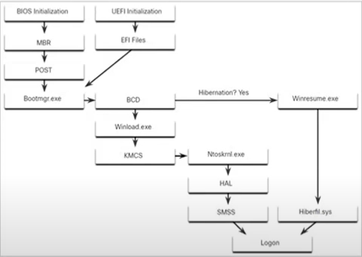

Windows Boot Process

Windows nasıl başlıyor ?
Windows başlatılırken ilk olarak eş zamanlı başlatılan iki tane teknoloji var ; birisi daha üstün bir teknoloji ama büyük ihtimalle kardırılacak diğeri daha yeni
amaçları ise bilgisiyarını çalıştırmak. Yani bilgisayarınızın tüm donanım kaynaklarını başlatma işlemlerini yapar.
Eğer cihazın BıOS'u var ise;- MBR adımı: işletim sistemini bulup yüklemekle görevli.
- POST adımı : Cihaz açılırken tüm donanımların testlerini yapar.
- Bootmgr.exe adımı: Windows işletim sisteminin açılışını yöneten bir dosyadır. Bu dosya, bilgisayarınızın önyükleme işlemi sırasında, işletim sistemini yüklemek ve çalıştırmak için gerekli olan işlemleri gerçekleştirir.
BıOS ve UEFı ortak adımları devamı- BCD adımı: veritabanını okumak ve buna göre bilgisayarı başlatmakla görevlidir. iki farklı adımı vardır;
- 1.-->Hibernation?Yes adımı: Hazırda beklet olarak kapatıldıysa eğer BCD de bunun bulgusu var ve giderek Hiberfil.sys dosyasını çalıştırır.O dosyayı okur ve login ekranına geçer.
- 2.-->Winload.exe adımı: Eğer bilgisayarınız normal kapatıldıysa bu açamaya geçer.
-
- KMCS adımı : Sürücülerin imzalanıp imzalanmadığını kontrol eder.
- Ntoskml.exe adımı : Windowsun işletim sistemi çekirdeği burada çalıştırılır.
- HAL adımı: Hardware Abstraction Layer kısmını çalıştırır.
- SMSS adımı: Session manager adımı oturum yöneticisini çalıştırır ve kullanıcı ortamını oluşturur